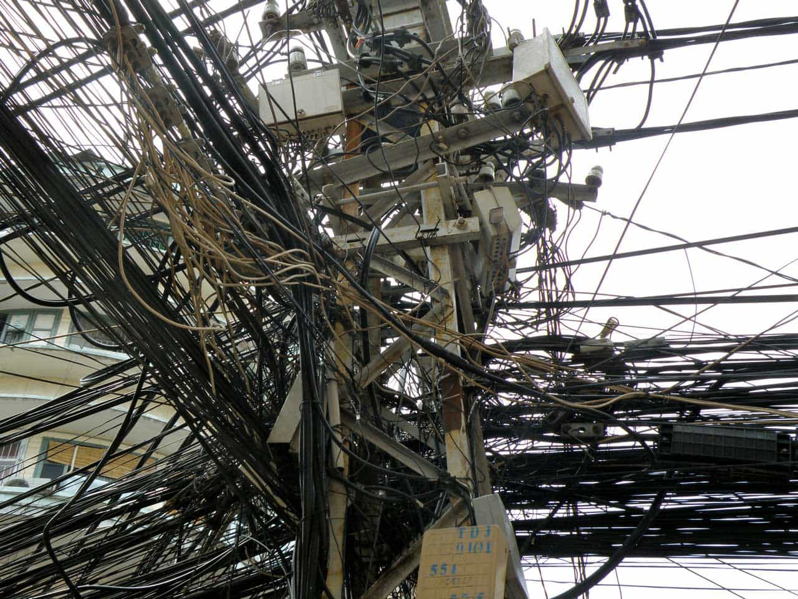

G-Freedom is an oilfield technician, writer and explorer. When not off somewhere new he's thinking, in the gym, or writing on www.artofselfhood.com


I’ve been living in South East Asia for almost a decade now, and over that time I’ve come to have a matured perspective on living here and a fair appreciation of the pros and cons of doing so. Like most people who come here, I set off thinking I was going to live in paradise. That’s far from the reality, let me tell you!
Living in South East Asia has its pros and cons, just like anywhere else. While I myself have decided to return west for a while, I’ll always have a connection to Asia and I’m sure I’ll be back many times throughout my life.
So what’s the REAL story with living in Asia? Is it all its cracked up to be? What does a man have to be aware of when coming here? Let’s look at six common stereotypical ideas about living in South East Asia, and assess them in the light of reality.

So sweet! Not so fast….
This is, most definitely, a myth, and if you come out here expecting to find some little house pet who does your bidding, you’ll be in for a rude awakening.
It’s definitely true that Asian women, in my experience, are a lot more traditional. They give the man his place in the house, rarely question your final decisions, and do not resent housework and basic wifely duties.
However, the idea that they’ll just do whatever you tell them without question is nonsense. They’re human beings with a will of their own and you wouldn’t be the first guy to get a smack in the head from a five-foot-two broad who weighs 90 pounds if you disrespect her.
The idea that Asian women are some sort of angelic alternative to Western women is also nonsense. While it’s not the norm, I’ve met several Western men who have been taken to the cleaners by their Asian wives and girlfriends. When you move here, you’re completely at her mercy and you will never have any legal rights as a citizen.
Asian women generally are a lot more traditional, but this stereotype that they’re some sort of perfect wife material has got to go. They’re individuals—and there are all kinds, good and bad, among them.
Read this guide to dating Asian women for a more complete perspective on the issue. It’s a thorny subject, and there’s a lot of misunderstanding surrounding it.
This is one I’d have to lean slightly towards agreeing with.
Most things in Asia are a lot cheaper. Eating out for my entire family often costs less than $15, meaning I can afford to do it basically every day. My rent for a condo apartment costs less than $150 a month, although that’s mostly because I live in the sticks and am not in a major city.
A general rule of thumb is that outside of major cities like Bangkok, Singapore, and KL, you can divide the cost of living by three and get a rough estimate.
Note, this does not apply to consumer goods such as cars and electrical appliances, which are in and around the same price. It certainly does not apply to luxury goods, which are often much more expensive because of the taxes placed on them by local governments.
Asia is cheaper overall, but anything other than the basics costs roughly the same. Life in South East Asia CAN be cheaper, but it isn’t necessarily so—it depends on your lifestyle.
Becoming a citizen in an Asian country is nigh on impossible. Even if you could, you probably wouldn’t want to.
You can get a variety of visas like permanent residency, and each country aims to facilitate the spouses of their nationals and, especially, retirees with proven cash in the bank. However, you’ll not become a CITIZEN with all of the various rights they enjoy.
It’s also worth noting: while you might get permanent residence, you’ll never be “one of them.” Even if you live here for 30 years, you will always be a foreigner and will be viewed as such by locals. This has pros and cons to it, but you’ll never quite feel at home and accepted as one of the group.
You’ll get undue respect from some for being a Westerner, but forget about talking politics or leveling criticisms at the way things are done—you’ll be met with hostility and resentment for the latter.
The weather in South East Asia is generally pretty awesome, and you can live an outdoors life you’ll truly enjoy if you’re that type.
The sun shines almost every day, and even when it’s overcast it’s warm, meaning you can go out and about and do anything from walk on the beach to shop in the city.
However, when the storms come, you’d better be prepared to get your ass inside. The rainfall and wind in many countries in South East Asia is truly terrifying. Just switch on any news station the next time a major storm hits the Philippines and you’ll see what it’s like.
Thankfully, after 1.5 years of living in the Philippines, I’ve never been caught directly in a major storm, although I’ve seen the tail end of plenty of them.
The weather is good when it’s good, and utterly awful when it’s bad. Check this clip out to see how bad it can get:
This is a stereotype that’s deeply mistaken, and whether or not it’s true depends on which country you go to.
True, countries like Laos and Bangladesh are miles behind any Western nation, but head to Singapore and you’ll be shocked by how far ahead of us they are in terms of tech and development.
Asia is developing at breakneck pace, and with that development comes super highways, skytrains, skyscrapers and everything else we usually associate with an advanced country. It won’t be long before many countries out here catch up and surpass the West, although it is definitely true that most of them are slightly behind for now.
There’s a phenomenon called “leapfrogging” which virtually guarantees Asian countries will catch up to and surpass the West quickly. Leapfrogging is when they can skip all of the evolution and development and simply emulate modern day technology developed elsewhere—a great example is India, where they have skipped the transition from dial-up to mobie internet and gone straight from nothing to mobile.
If you think this can’t be done and there are intellectual property laws to protect tech from being stolen wholesale, I salute you, but I have to laugh. There are no such laws, and even if there were, nobody would bother to enforce them.
On the other hand, you still have many scenes like this outside your window when you get out of the main cities:

Again, this is one I lean towards agreeing with. There are exceptions to every rule, but the family unit is extremely strong in Asia, especially countries like the Philippines.
I don’t want to wax lyrical or speculate as to why this is. It’s enough to acknowledge it as a fact and accept that it’s the case. 90% of the Asian people I have ever met and gotten to know from Indonesia to the Philippines to Thailand are devoted to their families to the extent that we’d consider it cult-like in most Western countries.
I pass no judgment on this whatsoever. It can be a great thing or a bad thing, depending on your own perspective. I personally like it and think it’s something we’ve lost in many European countries, and America, too.
This is an idea about Asia I agree with—the dedication to family above individuality is definitely true, and so by default if you get into a relationship with an Asian woman, be prepared for this.
The family unit is the sun around which everything orbits in most Asian countries.
Sorry to disappoint you, fellas, but you won’t find paradise in South East Asia.
What you will find is a place with many opportunities, pitfalls, pros and cons, but which I do not regret living in for a single second and which has come to be a large part of my life’s story.
I came out for a year and stayed for almost a decade. However, I’ve decided that time is now over and it’s time to go home.
I’d love to hear about your experiences living or traveling in Asia. Do you find my perceptions to be accurate, or do you have a different view?
Read More: Why Western Men Prefer Foreign Women Over Their Own